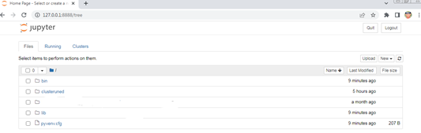

Capítulo 4. Arquitectura de Contenedores para el Despliegue del Entorno Big Data
Arquitectura de Contenedores para el Despliegue del Entorno Big Data
Arquitectura de Contenedores para el Despliegue del Entorno Big Data
Jupyter Notebook constituye el entorno de desarrollo utilizado durante las prácticas del proyecto para la creación, ejecución y documentación de código Python integrado con el ecosistema Hadoop.
Un Notebook combina código ejecutable, texto enriquecido, imágenes, ecuaciones y gráficos dentro de un único documento interactivo, facilitando la experimentación y la comprensión de los procesos desarrollados. Esta herramienta resulta especialmente adecuada para la enseñanza de tecnologías Big Data al permitir documentar paso a paso cada uno de los ejercicios realizados.
El servicio Jupyter se encuentra instalado en el contenedor NameNode, que actúa como nodo principal del clúster y como entorno de trabajo para el desarrollo de los ejercicios prácticos.
http://localhost:8888/tree
http://namenode:8888/tree
Una vez iniciado el contenedor NameNode, el servidor Jupyter queda disponible a través del navegador, ofreciendo acceso al árbol de directorios donde se almacenarán los notebooks desarrollados durante las prácticas.

Figura 30. Acceso web al servidor Jupyter Notebook.
Jupyter Notebook constituye el entorno principal de desarrollo utilizado en este proyecto. Desde esta herramienta se crearán los programas Python empleados para descargar datasets, generar archivos de datos, preparar la información y cargarla posteriormente en HDFS para su procesamiento mediante las diferentes tecnologías del ecosistema Hadoop.